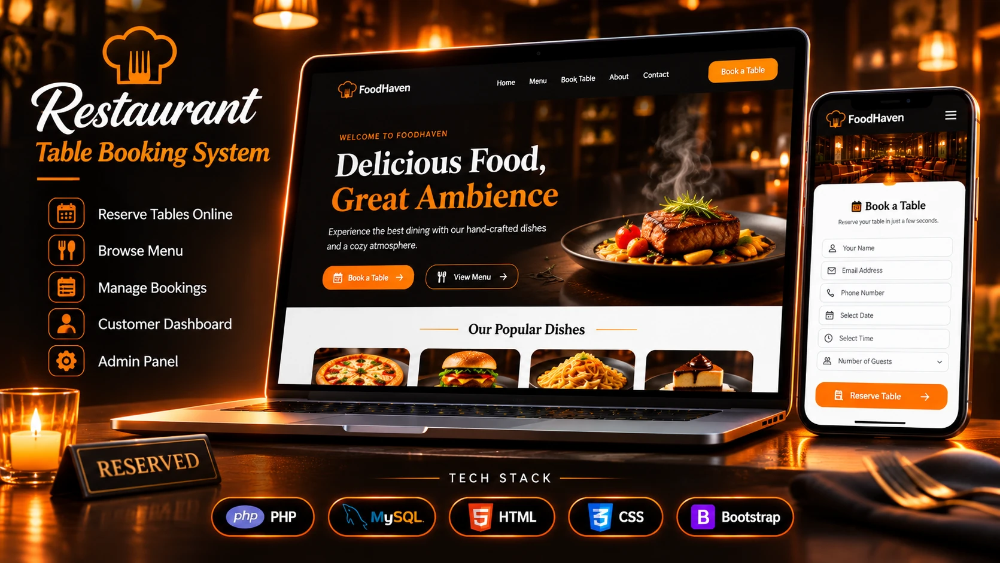

CONCEPTUAL PREVIEW
FROM IDEAS TO REALITY
Restaurant Booking
Online Table Reservation System
Under Deployment
Something Delicious Is Coming.
This project is currently under deployment. The live experience is not available yet. The displayed interface represents the conceptual vision of the project.
PHP
MySQL
HTML
CSS
JavaScript
Bootstrap
Back to Projects